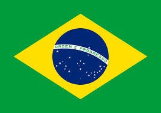
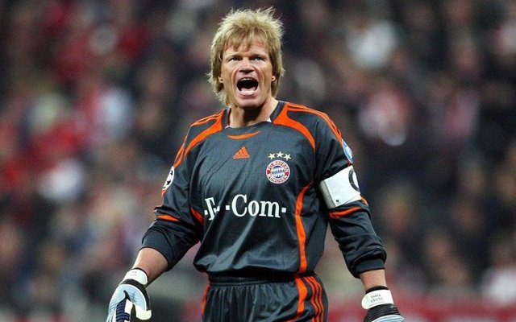

 RONALDO - 2002
- Surnommé Il Fenomeno en Italie et Ronaldinho au Brésil
Considéré comme l'un des meilleurs joueurs de l'histoire du football
Ronaldo
remporte son deuxième Ballon d'Or en 2002.
Nationalité : Brésilienne
Né le : 22 septembre 1976, à Rio de Janeiro (BRE)
Taille : 1,83
Poids : 82 kg
Poste : attaquant
Clubs : Social Ramos Club de Bento Ribeiro (1990-1991), Sao Cristovao de Rio de Janeiro (1991-1993), Cruzeiro Belo Horizonte (1993-1994), PSV Eindhoven (1994-1996), FC Barcelone (1996-1997), Inter Milan (1997-2002) et Real Madrid (depuis 2002)
Palmarès : Coupe du monde 1994 (sans jouer) et 2002 ; Copa America 1997 et 1999 ; Coupe des Confédérations 1997 ; Coupe intercontinentale des clubs 2002 ; Coupe des Coupes 1997 ; Coupe de l'UEFA 1998 ; Championnat d'Espagne 2003 ; Coupe des Pays-Bas 1996 ; Supercoupe d'Espagne 1996 et 2003 ; meilleur buteur du Mondial 2002 (8 buts) ; meilleur buteur du Championnat des Pays-Bas 1995 (30) ; meilleur buteur du Championnat d'Espagne 1997 (34) et 2004 (24)
Bilan en club : 518 matchs, 352 buts
Bilan en équipe du Brésil : 85 sélections A, 56 buts (1994-2004)
Bilan en phase finale de Coupe du monde : 3 participations (1er en 1994 et 2002 ; 2e 1998), 14 matches, 12 buts (1994-2002)
Palmarès Ballon d'Or : vainqueur en 1997 et 2002 (2e en 1996 ; 3e en 1998)
Classement du Ballon d’Or France Football 2002 :
Ronaldo (Brésil / Real Madrid)
Roberto Carlos (Brésil / Real Madrid)

Oliver Kahn (Allemagne / Bayern Munich)
Retour à l'accueil